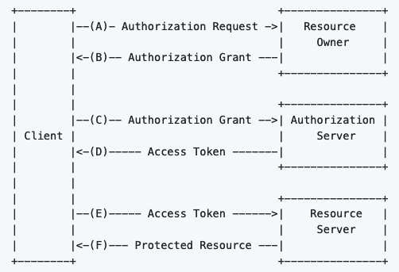
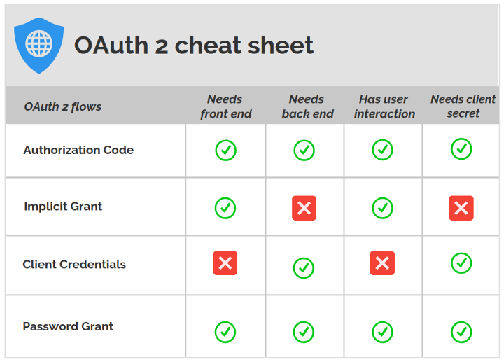

Understanding OAuth2
Part of Understanding Mastodon API
Protocol flow¶
- Source: https://github.com/go-oauth2/oauth2

References¶
- https://matduggan.com/make-a-mastodon-bot-on-aws-free-tier/
- https://gist.github.com/aparrish/661fca5ce7b4882a8c6823db12d42d26
Steps in OAuth2¶
- create app
- gets you client id & client secret
- get access token
- use client id, client secret, user id, password
- post your first action (in mastodon - toot)
- use client_id, client_secret, access_token to post the first one
Golang Package¶
- https://github.com/golang/oauth2
4 types of auth flows (grants)¶
The goal remains always the same: to obtain an access_token and use it to access protected resources.
- Authorization Code Grant: A code is issued and used to obtain the access_token. This code is released to a front-end application (on the browser) after the user logs in. The access_token instead, is issued Server side, authenticating the client with its password and the obtained code.
- Implicit Grant: after the user logs in, the access_token is issued immediately.
- Client Credential Grant: the ’access_token is issued on the server, authenticating only the client, not the user.
- Password Grant: the access_token is issued immediately with a single request containing all login information: username, user password, client id, and client secret. It could look easier to implement, but it has some complications.

References¶
- https://itnext.io/an-oauth-2-0-introduction-for-beginners-6e386b19f7a9
- https://alexbilbie.com/guide-to-oauth-2-grants/
What grants to use¶
- Single-page Javascript Web Applications (for example, Google Fonts) = Implicit
- Non-interactive programs for machine-to-machine communications (for example, background services and daemons) = Client Credentials
- Highly trusted apps (first-party apps) = Authorization Code or Resource Owner Password Credentials
- Less trusted apps (third-party apps requesting access to your platform) = Authorization Code
Loosely speaking, if you plan to build a platform where third-party applications and services can access its resources, go with the authorization code flow; on the other hand, you can use the resource owner password credentials flow to build a client (a web/mobile application) for your own service.
OAuth2 has 4 roles¶
- User — The end user who will use your application
- Client — The application you’re building that will use github account and the user will use
- Auth Server — The server that deals with the main OAuth things
- Resource Server — The server that has the protected resources. For example github
Building OAuth2 in Golang¶
- https://medium.com/@cyantarek/build-your-own-oauth2-server-in-go-7d0f660732c3
References¶
- https://itnext.io/an-oauth-2-0-introduction-for-beginners-6e386b19f7a9
- https://medium.com/@cyantarek/build-your-own-oauth2-server-in-go-7d0f660732c3
- https://medium.com/google-cloud/understanding-oauth2-and-building-a-basic-authorization-server-of-your-own-a-beginners-guide-cf7451a16f66